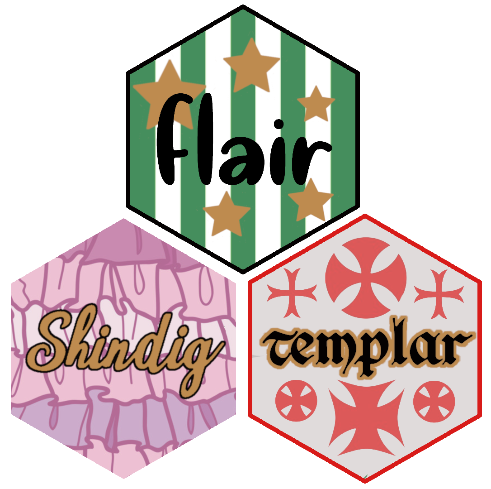

class: center, middle, inverse, title-slide # R tools for teaching and presentation ##  ### Kelly Bodwin ### These slides: <strong>kellybodwin.com/talks/rs2020</strong> --- <style type="text/css"> img { height: 400px; } .remark-code { font-size: 30px; } .remark-slide { background-size: cover; } </style> --- class: center, middle # **Thesis:** <br> -- # Some things are hard (especially for teachers). <br> -- # Let's use **R** to make them easier. --- class: inverse, center, middle # **Sneak Preview** ## Infant package edition --- class: inverse, center, middle # Hard for **very basic R users**: ### Making a simple Shiny app --- class: center,middle  --- class: inverse # **Our idea:** ## Wrappers to simplify Shiny ```r create_app("basic_app", layout = "default", data = "faithful") %>% add_histogram(x = "<text>", bins = "<slider>", title = "Old Faithful") ``` ---  --- class: inverse, center, middle # Hard for **teachers**: ### Updating course materials every year --- class: center, middle  --- class: inverse, center, middle # **Our idea:** ## Take advantage of templating in RS projects and R Markdown --- background-image: url("templar_project.png") background-position: center background-size: fill --- class: inverse, center, middle # **Our idea:** ## Take advantage of templating in RS projects and R Markdown ## Use R and yaml to automate "filler" --- background-image: url("templar_syllabus.png") background-position: center background-size: cover ---  --- class: inverse, center, middle # Hard for **everyone**: ## Formatting source code for presentations --- <code class ='r hljs remark-code'><span style='font-size:40'><span style='color:cornflowerblue'>my_presentation</span> %>%</span><br><span style='font-size:40'> <span style='background-color:pink'><span style='background-color:light green'>highlight_code</span></span>("<span style='background-color:#ffff7f'>this is important</span>") %>%</span><br><span style='font-size:40'> <span style='background-color:pink'>get_frustrated</span>() %>%</span><br><span style='font-size:40'> <span style='background-color:pink'>not_reproducible</span>()</span></code> --- class: center ## Me trying to highlight my code examples for lecture...  --- class: center, middle  ## 👉 github.com/kbodwin/flair --- class: inverse, center # How to add flair to your code  --- # **Step One:** ## Regular ol' code chunk (with a name) ```` ```{r how_to_pipe, include = FALSE} iris %>% group_by(Species) %>% summarize(mean(Sepal.Length)) ``` ```` --- # **Step Two:** ## Reference chunk by name with `decorate` <code class ='r hljs remark-code'><span style='background-color:#ffff7f'>decorate</span>("how_to_pipe") %>%</code> --- # **Step Three:**  --- # **Step Three:** ## Add your flair with `flair_*` functions <code class ='r hljs remark-code'>decorate("how_to_pipe") %>%<br> <span style='background-color:#ffff7f'>flair</span>("%>%") %>%<br> <span style='background-color:#ffff7f'>flair_funs</span>(color = "cornflowerblue") %>%<br> <span style='background-color:#ffff7f'>flair_args</span>(color = "indianred")</code> --- # **Step Four** ## There is no step 4. You're done! <code class ='r hljs remark-code'>iris <span style='background-color:#ffff7f'>%>%</span><br> <span style='color:cornflowerblue'>group_by</span>(Species) <span style='background-color:#ffff7f'>%>%</span><br> <span style='color:cornflowerblue'>summarize</span>(<span style='color:cornflowerblue'>mean</span>(Sepal.Length))</code> ``` ## # A tibble: 3 x 2 ## Species `mean(Sepal.Length)` ## <fct> <dbl> ## 1 setosa 5.01 ## 2 versicolor 5.94 ## 3 virginica 6.59 ``` --- class: inverse, center, middle # Speed **FAQ** --- # **FAQ:** ## Does this work in `ioslides`, `xaringan`, etc?  </img> --- # **FAQ:** ## Does this work in `ioslides`, `xaringan`, etc? Sometimes we need to hard-code the formatting. Easily done if you tell me the doc type. File issue on GitHub to request more functionality. --- # **FAQ:** ## What happens when you run in console/Rmd source? -- 1. Code actually runs invisibly -> can create objects! -- 2. Source code w/flair is previewed in viewer pane. --- # **FAQ:** ## Does this work with LaTeX knitting? -- ## Not yet, but it is high priority! --- # **FAQ:** ## When will this be on CRAN? -- <strike> two months ago </strike> --  --- <style type="text/css"> .blinking{ animation:blinkingText 1.2s infinite; } @keyframes blinkingText{ 0%{ color: #000; } 49%{ color: #000; } 60%{ color: transparent; } 99%{ color:transparent; } 100%{ color: #000; } } </style> ```r decorate("Thank you!", eval = FALSE) %>% flair("Thank you!", before = "<span class='blinking'>", after = "</span>") ``` <code class ='r hljs remark-code'><span class='blinking'>Thank you!</span></code> --- class: inverse, center, middle # Find the **flair** package: ## **github.com/kbodwin/flair** # Find me: ## **@KellyBodwin** ## **kelly-bodwin.com** # Take hex stickers!